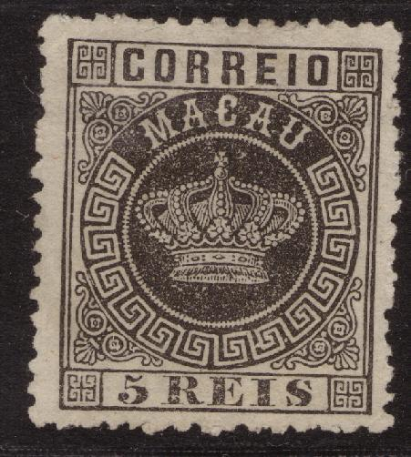
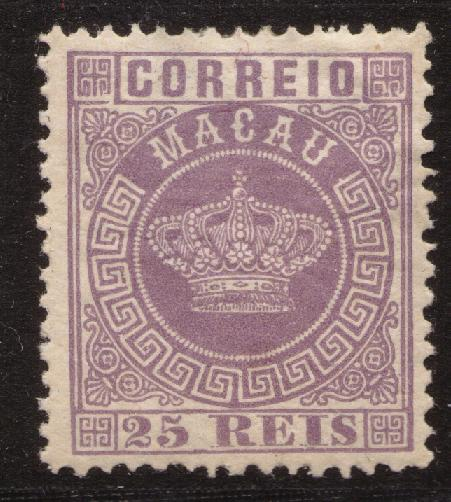
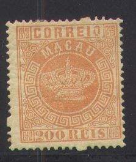
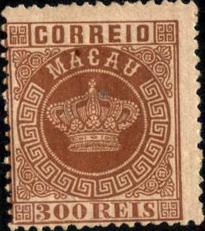
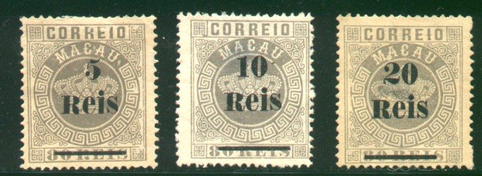
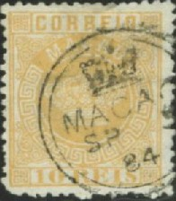
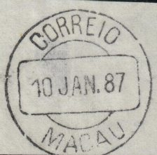

Return To Catalogue - 1888-1897 issues - 1898-1920 issues - Port in China - Portuguese colony
Note: on my website many of the
pictures can not be seen! They are of course present in the
catalogue;
contact me if you want to purchase the catalogue.


5 r black 10 r yellow 10 r green (1885) 20 r brown 20 r red (1885) 25 r red 25 r lilac (1885) 40 r blue 40 r yellow (1885) 50 r green 50 r blue (1885) 80 r grey (1885) 100 r lilac 200 r orange 300 r brown
These stamps have perforation 12 1/2 or 13 1/2. Reprints were made in 1885 and 1905 (value of the reprints 'c' to '*'). Stamps in similar designs were issued for most Portuguese colonies (country name different for each country), click here for more information on this issue.
Value of the stamps |
|||
vc = very common c = common * = not so common ** = uncommon |
*** = very uncommon R = rare RR = very rare RRR = extremely rare |
||
| Value | Unused | Used | Remarks |
| 5 r | *** | *** | |
| 10 r yellow | *** | *** | |
| 10 r green | *** | *** | |
| 20 r brown | R | R | |
| 20 r red | R | R | |
| 25 r red | * | ** | |
| 25 r lilac | *** | *** | |
| 40 r blue | R | R | |
| 40 r yellow | R | R | |
| 50 r green | R | R | |
| 50 r blue | *** | *** | |
| 80 r | *** | *** | |
| 100 r | *** | *** | |
| 200 r | *** | *** | |
| 300 r | *** | *** | |
| Reprints: c to * | |||
Surcharged with value in a circle (1884)
'80 reis' on 100 r lilac
Value of the stamps |
|||
vc = very common c = common * = not so common ** = uncommon |
*** = very uncommon R = rare RR = very rare RRR = extremely rare |
||
| Value | Unused | Used | Remarks |
| 80 r on 100 r | *** | *** | With or without accent on 'e'. |
Surcharged in fancy letters (1885)
'5 Reis' on 25 r red '10 Reis' (blue) on 25 r green '10 Reis' (blue) on 50 r green '20 Reis' on 50 r green '40 Reis' (red) on 50 r green
Value of the stamps |
|||
vc = very common c = common * = not so common ** = uncommon |
*** = very uncommon R = rare RR = very rare RRR = extremely rare |
||
| Value | Unused | Used | Remarks |
| With or without accent on 'e' of 'Reis' | |||
| 5 r on 25 r | *** | *** | |
| 10 r on 25 r | *** | *** | |
| 10 r on 50 r | RR | RR | |
| 20 r on 50 r | *** | *** | |
| 40 r on 50 r | RR | RR | |
Surcharged (1887)



'5' on 25 r red '5 Reis' on 80 r grey (2 types) '5 Reis' on 100 r lilac '10' on 25 r red '10 Reis' on 80 r grey '10 Reis' on 200 r orange '20 Reis' on 80 r grey
Value of the stamps |
|||
vc = very common c = common * = not so common ** = uncommon |
*** = very uncommon R = rare RR = very rare RRR = extremely rare |
||
| Value | Unused | Used | Remarks |
| 5 r on 25 r | *** | *** | |
| 5 r on 80 r | *** | *** | Type I: 'R' of 'Reis' same size as other letters Type II: 'R' of 'Reis' larger: RR |
| 5 r on 100 r | R | R | |
| 10 r on 25 r | *** | *** | |
| 10 r on 80 r | *** | *** | Type I: 'R' of 'Reis' same size as other letters Type II: 'R' of 'Reis' larger: RR |
| 10 r on 200 r | R | R | Type I: 'R' of 'Reis' same size as other letters Type II: 'R' of 'Reis' larger: RR |
| 20 r on 80 r | R | *** | Type I: 'R' of 'Reis' same size as other letters Type II: 'R' of 'Reis' larger: RR |
Surcharged in 'AVOS' with fancy letters (1902)
'6 AVOS' on 10 r yellow '6 AVOS' on 10 r green
Value of the stamps |
|||
vc = very common c = common * = not so common ** = uncommon |
*** = very uncommon R = rare RR = very rare RRR = extremely rare |
||
| Value | Unused | Used | Remarks |
| 6 a on 10 r yellow | *** | *** | |
| 6 a on 10 r green | *** | *** | |
Surcharged with fancy letters and overprinted "REPUBLICA" in red (1913)
'6 AVOS' on 10 r green
Value of the stamps |
|||
vc = very common c = common * = not so common ** = uncommon |
*** = very uncommon R = rare RR = very rare RRR = extremely rare |
||
| Value | Unused | Used | Remarks |
| 6 a on 10 r | R | R | |
I've seen a two ring cancel with 'MACAO' date and year in the center (also with a crown in the upper part):

Most likely reprints with are 'cancelled to order' (CTO).
Fournier forgeries:
Fournier (a famous forger) has made forgeries of the crown issue of Macao (including the overprints). The central circle with the name 'MACAU' is a little bigger than in the genuine stamps. At the top it touches the line above it quite much. In the genuine stamps it touches it very lightly or not at all. The upper right ornament (besides the 'U' of 'MACAU') is not symmetric as the other ornaments. I have also noticed that the left upper ornament (outside the circle, besides the 'M'), is very close to the frame compared to a genuine stamp. For pictures of this click here. The 25 r forgery shown above with 'FAUX' overprint was taken from a Fournier Album of Philatelic Forgeries.
Below is a cancel that Fournier used (taken from a Fournier album) in reduced size.

(Forged Fournier cancel)
(Reduced sizes)
I have seen the cancels "CORREIO 10 JAN. 87 MACAU" and "DIRECCAO DO CORREIO 14 JUN 84 DE MACAU". The date seems to be fixed, so this can be used for identification. However, uncancelled Fournier forgeries also exist. In some Fournier Albums, the cancel "CORREIO 13 NOV. 84 BOLAMA" is added, but this cancel was used for forgeries of Portuguese Guinea, while the "DIRECCAO DO CORREIO 14 JUN 84 DE MACAU" cancel is listed under Portuguese India.
Pages from a Fournier Album.
The non-surcharged stamps of 1884 (9 values, 1st
choice) were offered for 2 Swiss Francs by Fournier in his 1914
price list. The values of 1885 (non-surcharged, 6 values, 1st
choice) were offered for 1 Swiss Franc. The surcharges of 1884/85
(7 varieties) were offered for 3 Swiss Francs. These consist of
the surcharges in fancy letters and the circular surcharge. I
have seen a '10 Reis' (in blue) on 50 r green and a '10 Reis' (in
red, bogus?) on 50 r green. The surcharges of 1886/87 (7 values
also) were offered for 3 Swiss Francs as well. Of course, the
stamps and the surcharges are forged.
More information concerning Fournier forgeries can be found in
the following website:
http://www.tabacaria.org/Selos/Coroa2/MacauFournier.htm.

Another Fournier forgery with a bar cancel
'Falso do Arco' or circle forgery:
A forgery with a circle on top of the crown (directly under the cross) also exist (there should be a pearl). The four corner ornaments don't have a wavy outline, but more a straight line. Sorry, no picture available now. More information (including a picture) can be found at: http://www.tabacaria.org/Selos/Coroa2/Macaucircle.htm.
Another forgery:
In the above forgery there are much less pearls in the circle surrounding the crown than in the genuine stamps.
'5 REIS' on green and yellow
'10 REIS' on green and yellow ('CORREIO' much smaller)
'40 REIS' on green and yellow ('CORREIO' as in 5 r' stamp)
Value of the stamps |
|||
vc = very common c = common * = not so common ** = uncommon |
*** = very uncommon R = rare RR = very rare RRR = extremely rare |
||
| Value | Unused | Used | Remarks |
| 5 r | *** | *** | |
| 10 r | *** | *** | |
| 40 r | *** | *** | |
I've seen stamps with the fiscal upper and lower part still attached:

10 r on 60 r with upper and lower part still attached.
For more stamps of Macao click here.
Stamps - Selos - Briefmarken - Timbres-Poste - Postzegels - Francobolli - Estampillas


{kind=link}
{kind=link}
{kind=link}
{kind=link}
{kind=link}